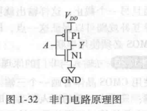
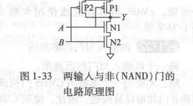
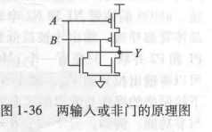
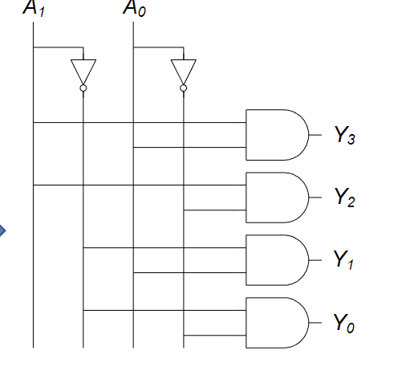
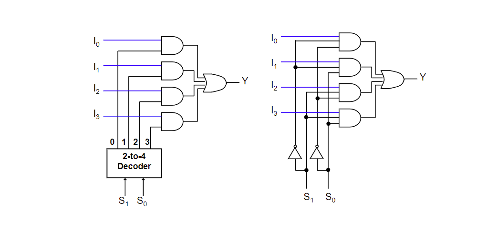
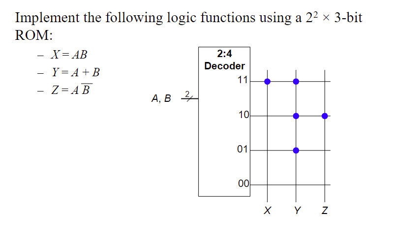
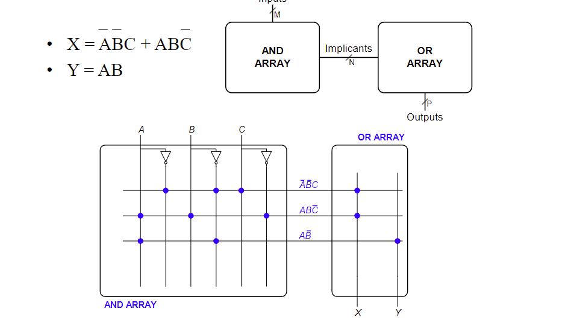

# 1 二进制
# 1.1 The Art of Managing Complexity
- Abstraction
隐藏不重要的细节
- Discipline 约束
一种内在限制，可以帮助我们更高度地抽象化
- The Three -y's
- Hierarchy 层次化
系统划分为模块和子模块
- Modularity 模块化
所有模块都有定义好的功能和接口
- Regularity 规整化
模块追求 uniformity，可以被 reused
# 1.2 数制
内容：
进制数之间的转化：整数和小数
浮点数的 IEEE 格式化
可以去看计组或者计概的笔记
# 1.3 二进制运算
二进制加减、二进制原型的反码、补码
# 1.4 Logic Gates
常见的逻辑门有：NOT AND OR NAND NOR ，其中被分为单输入、多输入
# 1.4.1 Logic Level
使用 Discrete Voltages 来代表 0（低电平）和 1（高电平）
输入端和输出端的最小可视为高（低）电平的电压的差值（记住大减小即可）被称为噪声容限（noise margin），分为高电平噪声容限和低电平噪声容限
# 1.5 晶体管 Transistor
- nMOS：接低电平 输入端 0 不可过、1 可过
- pMOS：接高电平 输入端 1 可过、0 不可过
组合成逻辑门：
- 非门
 - 与非门：nMos 串联，pMos 并联
 - 或非门：nMos 并联，pMos 串联
 - 如果要构造与门或门，就在与非门和或非门输入端加上非门
- 要多输入就并串几个
# 2 组合逻辑电路
# 2.1 主题总览
-
Boolean Equations
-
Boolean Algebra
-
From Logic to Gates
-
Multilevel Combinational Logic
-
X's and Z's
-
Karnaugh Maps
-
Combinational Building Blocks
-
Timing
-
node： A node is a wire, whose voltage conveys a discrete-valued variable
- input
- output
- internal
# 2.2 Boolean Equations 布尔表达式
取反：A'；取与（积）：A.B；取或（和）：A+B
- 最小项 Minterm：化简后全部积起来
- 最大项 Maxterm：化简后全部和起来
SOP form: 使用和式将与式连接起来的模式
- 每一行都有最小项
- 所有的布尔表达式都可以写成 SOPform
- 最小项之和
- Y 值为 1 的需要
POS form：使用积式将和式连接起来
| A | B | max |
|---|---|---|
| 0 | 0 | A+B |
| 1 | 0 | A'+B |
| 0 | 1 | A+B' |
| 1 | 1 | A'+B' |
- 每一行都有最大项
- 所有的布尔表达式都可以写成 POSform
- 最大项之积
- Y 值为 0 的需要
Normalterm form：变量只出现一次的式子
# 2.3 Boolean Algebra 布尔代数
布尔运算规律
- 同一性：B・1=B；B+0=B；
- 零元律
- 重叠率
- 回旋
- 互补：B・B'=0；B+B'=1
- 交换律
- 结合律
- 分配律
- 吸收律：B·（B+C）=B；B+B·C=B
- 合并律：（B・C）+（B・C'）=B；（B+C）・（B+C'）=B
- 一致律：
- （B·C）+（B'·D）+（C·D）=（B·C）+（B'·D）
- （B+C）·（B'+D）·（C+D）=（B+C）·（B'+D）
- 德摩根律
# 2.4 Schematic 逻辑电路原理图
按数电的经验来完成
# 2.5 Multilevel Combinational Logic
# 2.5.1 Hardware Reduction
NANDs 和 NORs 的使用能提高效率，所以需要把布尔表达式化成与非或非式，这个翻译过程称为 Circuit Manipulations
使用前面介绍的布尔代数规律进行转换
# 2.5.2 Bubble Pushing 气泡推进
大量的与非门和或非门使得表达式的阅读变得困难，使用气泡推进使得 node 两边要么没有取反要么都取反
原理：
- Y=（AB）’=A'+B'
- Y=（A+B）’=A'·B'
两种推进方式： - Backward：
- Forward：
技巧：推进的时候，负号移动，变元器件
# 2.6 X 和 Z
-
X
Content：电路尽力同时将输出置为 1 和 0，此时输出值被称为 X，也叫做非法值。 -
Z
Floating 浮空值：Z 表示某输出值既没有被驱动为 0 也没有被驱动为 1，常见于三台缓冲器（带有 enable 的原件）
# 2.7 卡诺式图
目的：化简布尔表达式
详见数电
# 2.8 组合逻辑模块 Combinational Building Blocks
# 2.8.1 Decorders 译码器
译码器是多输入、多输出的逻辑电路，用来把一段编码转换成另一段编码。
译码器有 enable inputs，用来选择功能
常见的译码器有：N-to-2N Decoders
- N inputs and 2N outputs
- One-hot outputs：在一个时间段里只有多个输出中只有一个高电平
2-4 Decoder 的实现：

就是在输入端加一个置反的和不置反的一起加到 AND 门下，有多少个输出就有多少个 AND 门
可以使用 decoder 的输出来组合成各种各样的逻辑电路，因为一个 a-b decoder 实际上就是 ab 的所有 minterm 的组合
# 2.8.2 Multiplexers 多路复用器
与译码器的少变多不同，mux 是在多个输入中选择特定的输入输出 1，也就是多变少。
MUX 不仅需要输入端，也需要选择端 select（S） ，有 N 个 select 就选择 2 的 N 次方个输入连接输出
4-to-1 MUX
原理图：

小的 MUX 可以组合成大的 MUX
MUX 可以使用 lookup table 来实现逻辑内容，Y=F（S1，S2，・・・），可以根据查找表决定要选择的输入，置为 1，或者是逻辑变量也为 1 的逻辑变量；其他的输入置为 0 或者逻辑变量也为 0 的逻辑变量；就可以实现逻辑表达式。
# 2.9 Timing 时序
- 输入改变后输出作出改变时发生的延迟
- Timing diagram（时序图）：描述一个电路在输入端发生变化时产生的瞬间变化。

- Propagation delay（传播延迟）：tpd = 从 input 到 output 的最大延迟；
- Contamination delay（最小延迟）：tcd = 从 input 到 output 的最小延迟。
delay 产生的原因：
- 电路中的电容和电阻
- 光速的限制
为什么 tpd 和 tcd 通常是不一样的：
-
上升沿延迟和下降沿延迟是不一样的
-
多个输入和输出之间延迟不同
-
电路的温度
-
Critical Path 关键路径
the longest,slowest path -
Short Path 最短路径
the shortest,fastest path
Glitch 毛刺
当一次输入端改变引起输出端多次改变时就会发生毛刺
如何修正：
卡诺式图的圈连接起来
# 3 时序逻辑电路
主题：
- Latches and Flip-Flops
- Synchronous Logic Design
- Finite State Machines
- Timing of Sequential Logic
- Parallelism
时序逻辑电路的输出取决于之前的输入和当前的输入，所以具有记忆功能 memory。
- state：记住之前的输入，就是当前电路的状态
- Latches and flip-flops：储存一个状态的状态元素集合
- synchronous sequential circuits：由 flip-flops 组合成的组合逻辑电路
# 3.1 锁存器 Latch
Bistable Circuit：双稳态元件，可以输出一正一反两个输出，没有输入，用于储存。
- SR Latch SR 锁存器
特性：S 是 set 位，R 是 reset 位，S=1R=0 时 Q 被设置为 1，当 S=0R=1 时 Q 被重置为 0；S=0R=0 时 Q 保持不变，储存；S=1R=1 是非法状态
- D Latch D 锁存器
特性：
- 两个输入：D 和 CLK 时钟信号
- 当 CLK=1 时，Q 变成和 D 一样；当 CLK=0 时，Q 保持不变
# 3.2 触发器 flip-flops
- D Flip-Flop
D 寄存器，两个输入：CLK 和 D；CLK 上升沿时，D 赋值给 Q；CLK 下降沿时，保持。
注意和 D Latch 的区别：D 锁存器是在 CLK 是 1 时候发生作用，在这期间 D 的变化都会引起 Q 的变化；而 D 触发器只有在 CLK 上升时，时间只有一刹那。
Enable Flip-flops 带使能端的触发器
当 E 是 1 时，触发器是普通的触发器；当 E 是 0 时，触发器只有保持功能。
Resettable Flip-Flops 带重置端的触发器
当 Reset=1 时，Q 被重置为 0；当 Reset=0 时，触发器为普通的 D 触发器
两种类型：
- Synchronous 同步的：只有在 CLK 上升沿发生作用
- Asynchronous 异步的：即时的
Settable Flip-Flops 带重置端的触发器
当 Set=1 时，Q 被重置为 1；当 Set=0 时，触发器为普通的 D 触发器
两种类型：
- Synchronous 同步的：只有在 CLK 上升沿发生作用
- Asynchronous 异步的：即时的
# 3.3 synchronous logic design 同步逻辑电路设计
特性：
- 使用寄存器来切开环路
- 寄存器保存着系统的状态
- 在上升沿时系统的状态发生改变
- 同步时序电路组成规则：
- 所有的元件是寄存器或者组合元器件
- 至少由一个元件是寄存器
- 所有的寄存器都接收同一个时钟信号 CLK
- 所有的环路都有一个寄存器
两种常见的 SSC：
- FSMs 有限状态机
- Pipeline 流水线
# 3.3.1 必考重点：FSMs
组成：由 M 个输入，N 个输出和 k 位状态。同时接收一个 CLK 和可选择的复位信号。
寄存器：

next 在左，current 在右！
FSM = next state logic + output logic
next state logic：用来产生下一个状态；
output logic：用来确定结束状态
两种常见的 FSM：Moore FSM 和 Mealy FSM
- Moore FSM：output 取决于当前 state
- Mealy FSM：output 取决于当前 state 和输入


# 3.3.1.1 Moore FSM
创建 moore FSM 的流程：
- 根据实际情况确定状态集合以及状态转换条件，确定状态机图
- 根据状态机图绘制状态转换表
- 对状态和输出进行二进制编码
- 使用状态的编码结果来表示状态转换表重写状态转换表，可以把输入拆开，写成卡诺图的形式，用卡诺图来化简
- 根据这个表确定 next state 的布尔表达式，使用 SOP form，最后对布尔表达式进行化简
- 确定输出表
- 根据这个表确定 output state 的布尔表达式，使用 SOP form，最后对布尔表达式进行化简
- 就可以根据 next state 和 output state 的布尔表达式进行电路设计
上面步骤中的状态编码环节有别的方法：one-hot encoding
对 N 个状态的编码有 N 位，其中只有一位是 1
注意绘制状态机图的思想：
- 先假设一个初始状态，这个状态表示输入对靠近结果没有作用时进入的状态
- 针对不同的输入，初始状态会进入什么样的等待状态
- 等待的值是输入值，就进入输出状态，这样所有的状态就确定完成
- 确定每个状态的不同输入会导致进入什么状态
# 3.3.1.2 Mealy FSM
Mealy FSM 各个输出会被标记在弧上而不是当前状态上，表明其受输入和状态的影响。
创建 Mealy FSM 的步骤：
- 同样是画出状态机图
- 确定状态转换表
- 对状态和输出进行编码
- 重写状态转换表，可以把输入拆开，写成卡诺图的形式，用卡诺图来化简
- 确定 next state 和 output 的布尔表达式
- 设计电路
注意绘制状态机图的思想：
- 先假设一个初始状态，这个状态表示输入对靠近结果没有作用时进入的状态
- 针对不同的输入，初始状态会进入什么样的等待状态
- 等待的值是输入值，就回到初始状态，连接的边上的输出为 1
- 确定每个状态的不同输入会导致进入什么状态
# 3.3.2 FSM Factor 拆解
# 3.3.3 重点：从一个电路推导出一个 FSM（逆向）
步骤：
- Examine circuit, stating inputs, outputs, and state bits.
- Write** next state and output equations**.
- Create next state and output tables.
- Reduce the next state table to** eliminate unreachable
states**. - Assign each valid state bit combination a name.
- Rewrite next state and output tables with state names.
- Draw state transition diagram.
- State in words what the FSM does.
# 3.4 Timing of Sequential Logic
-
Input Timing Constraints
- Setup time 建立时间：时钟上升沿到前 data 稳定的时间
- Hold time 保持时间：时钟上升沿到后 data 稳定的时间
- Aperture time 孔径时间：setup time + hold time
-
Propagation delay 传播延迟：tpcq 时钟上升沿到来后确定 data 保持稳定的时间
-
Contamination delay 最小延迟：tccq 时钟上升沿到来后不稳定开始的时间
# 3.4.1 Dynamic Discipline 动态约束
- 输入端数据在 CLK 上升沿到来时需要在孔径时间内保持稳定
- 特殊情况下，至少在 CLK 上升沿到来前的建立时间和后的保持时间内保持稳定
# 3.4.1.1 Setup Time DIscipline
两个寄存器中间的延迟 Tc >= tpcq + tpq + t-setup
=> tpd <= TC - tpcq - t-setup（tpd 是寄存器之间组合逻辑电路传播延迟）（Tc 是一次时钟周期）
(tpcq + tsetup): sequencing overhead
# 3.4.1.2 Hold Time Discipline
t-hold <tccq + tcd (tccq 是最小传播延迟，tcd 是两个寄存器之间的组合电路的最小传播延迟)
tcd > t-hold -tccq
# 3.4.2 Timing Analysis
使用上面介绍的几个不等式对时序电路进行时序分析
一个时序电路的 tccq、tpcq、t-setup、t-hold、tpd、tcd 是确定的，求解建立时间约束和保持时间约束。前者计算查看 Tc 是否在约束内，后者计算查看 t-hold 是否在约束内。
# 3.4.3 解决违反（不做要求）
# 4 硬件描述语言
主题：
- Combinational Logic
- Structural Modeling
- Sequential Logic
- More Combination Logic
- Finite State Machines
- Parameterized Modules
- Testbenches
# 4.1 SystemVerilog Modules
模块分为两种：Behavioral（描述一个模型干什么）、Structural（描述一个模块这样从更简单的模块构成）
- Behavioral Modeling
y=a'b'c'+ab'c'+ab'c
SystemVerilog:
1
2
3module example(input logic a,b,c, output logic y);
assign y = ~a & ~b ~c | a & ~b & ~c | a & ~b & c;
endmodule
-
module/endmodule: required to begin/end module
-
example: name of the module
-
Operators:
~: NOT
&: AND
|: OR -
仿真与综合
-
Structural Modeling - Hierarchy
1
2
3
4
5
6
7
8
9
10
11
12
13
14module and3(input logic a, b, c,
output logic y);
assign y = a & b & c;
endmodule
module inv(input logic a,
output logic y);
assign y = ~a;
endmodule
module nand3(input logic a, b, c, output logic y);
logic n1; // internal signal
and3 andgate(a, b, c, n1); // instance of and3
inv inverter(n1, y); // instance of inv
endmodule
# 4.2 Combinational Logic 组合逻辑
如何使用 HDL 编写组合逻辑的行为模型
# 4.2.1 Bitwise Operators 位运算符
1
2
3
4
5
6
7
8
9
10
11module gates(input logic [3:0] a, b,
output logic [3:0] y1, y2, y3, y4, y5);
/* Five different two-input logic
gates acting on 4 bit busses */
assign y1 = a & b; // AND
assign y2 = a | b; // OR
assign y3 = a ^ b; // XOR
assign y4 = ~(a & b); // NAND
assign y5 = ~(a | b); // NOR
endmodule
[N-1:0] 表示一个 N 位的 bus
# 4.2.2 Reduction Operators 缩位运算符
表示作用在 bus 上的多输入门
1
2
3
4
5
6
7module and8(input logic [7:0] a,
output logic y);
assign y = &a;
// &a is much easier to write than
// assign y = a[7] & a[6] & a[5] & a[4] &
// a[3] & a[2] & a[1] & a[0];
endmodule
# 4.2.3 条件赋值
1
2
3
4
5module mux2(input logic [3:0] d0, d1,
input logic s,
output logic [3:0] y);
assign y = s ? d1 : d0;
endmodule
? : is also called a ternary operator because it
operates on 3 inputs: s, d1, and d0.
# 4.2.4 内部变量
可以理解为中间变量
1
2
3
4
5
6
7
8module fulladder(input logic a, b, cin, output logic s, cout);
logic p, g; // internal nodes
assign p = a ^ b;
assign g = a & b;
assign s = p ^ cin;
assign cout = g | (p & cin);
endmodule
内部变量实际上是小的逻辑电路
# 4.2.5 Precedence 优先级

# 4.2.6 Numbers
格式：N'Bvalue
- N = 位数
- B=base（几进制）
- Number # Bits Base Decimal
| Number | bits | Base | Decimal | Stored |
|---|---|---|---|---|
| 3'b101 | 3 | binary | 5 | 101 |
| 3'd6 | 3 | decimal | 6 | 110 |
| 6'o42 | 6 | octal | 34 | 100010 |
# 4.2.7 Z
- Z：Floating Output
1
2
3
4
5
6module tristate(input logic [3:0] a,
input logic en,
output tri [3:0] y);
assign y = en ? a : 4'bz;
endmodule
# 4.2.8 Bit Manipulations 位操作
常常需要在总线的子集上操作，这些操作称为位操作，也叫位混合
# 4.2.9 Delays
# 4.3 Sequential Logic 时序逻辑
- System Verilog 使用 idioms 来表述锁存器、触发器和状态机
Always Statement
1
2
3always @(sensitivity list)
statement;
无论什么时候 sensitivity list 里的事件发生时，statement 执行
# 4.3.1 寄存器
1
2
3
4module flop(input logic clk, input logic [3:0] d, output logic [3:0] q);
always_ff @(posedge clk)
q <= d; // pronounced “q gets d”
endmodule
# 4.3.2 Resettable 寄存器
1
2
3
4
5
6module flopr(input logic clk, input logic reset, input logic [3:0] d, output logic [3:0] q);
// synchronous reset
always_ff @(posedge clk)
if (reset) q <= 4'b0;
else q <= d;
endmodule
# 4.3.3 Registers with Enable
1
2
3
4
5
6
7module flopren(input logic clk,input logic reset,
input logic en, input logic [3:0] d, output logic [3:0] q);
// asynchronous reset and enable
always_ff @(posedge clk, posedge reset)
if (reset) q <= 4'b0;
else if (en) q <= d;
endmodule
# 4.3.4 Multiple 寄存器
1
2
3
4
5
6
7
8module sync(input logic clk, input logic d, output logic q);
logic n1;
always_ff @(posedge clk)
begin
n1 <= d; // nonblocking
q <= n1; // nonblocking
end
endmodule
# 4.3.5 Latches
1
2
3
4module latch(input logic clk, input logic [3:0] d, output logic [3:0] q);
always_latch
if (clk) q <= d;
endmodule
# 4.4 使用 always 语句的组合逻辑
1
2
3
4
5
6// combinational logic using an always statement
module inv(input logic [3:0] a,
output logic [3:0] y);
always_comb
y = ~a;
endmodule
当 = 号的右边的变量发生变化时，always_comb 下的语句就重新运算，always_comb 就等于 always@（*）
# 4.4.2 case 语句
case 语句：和别的语言用法一样
1
2
3
4
5
6
7
8
9
10
11
12
13
14
15
16
17
18module sevenseg(input logic [3:0] data,
output logic [6:0] segments);
always_comb
case (data)
// abc_defg
0: segments = 7'b111_1110;
1: segments = 7'b011_0000;
2: segments = 7'b110_1101;
3: segments = 7'b111_1001;
4: segments = 7'b011_0011;
5: segments = 7'b101_1011;
6: segments = 7'b101_1111;
7: segments = 7'b111_0000;
8: segments = 7'b111_1111;
9: segments = 7'b111_0011;
default: segments = 7'b000_0000; // required
endcase
endmodule
别忘记了 endcase 语句
# 4.4.3 casez 语句
看个例子就明白了
1
2
3
4
5
6
7
8
9
10
11module priority_casez(input logic [3:0] a,
output logic [3:0] y);
always_comb
casez(a)
4'b1???: y = 4'b1000; // ? = don’t care
4'b01??: y = 4'b0100;
4'b001?: y = 4'b0010;
4'b0001: y = 4'b0001;
default: y = 4'b0000;
endcase
endmodule
# 4.4.4 if
# 4.5 辩：Blocking = & Nonblocking <= Assignment
在时序电路中使用非阻塞；在组合电路中使用阻塞
# 4.6 信号赋值的原则
- 时序逻辑电路使用：always_ff@(posedge clk) nonblocking assignment <=
- 简单的组合逻辑电路使用 assign
- 复杂的组合逻辑电路使用 always_comb blocking assignment =
- 对一个信号的赋值旨在一个 always 语句或者连续赋值语句中，不要多次赋值
# 4.7 FSMs
常见的 FSMs 代码编写规范
背就完事了
- Divide by 3
1
2
3
4
5
6
7
8
9
10
11
12
13
14
15
16
17
18
19
20module divideby3FSM (input logic clk,
input logic reset,
output logic q);
typedef enum logic [1:0] {S0, S1, S2} statetype;
statetype state, nextstate;
// state register
always_ff @ (posedge clk, posedge reset)
if (reset) state <= S0;
else state <= nextstate;
// next state logic
always_comb
case (state)
S0: nextstate = S1;
S1: nextstate = S2;
S2: nextstate = S0;
default: nextstate = S0;
endcase
// output logic
assign q = (state == S0);
endmodule - Moore FSM
1
2
3
4
5
6
7
8
9
10
11
12
13
14
15
16
17
18
19
20
21
22
23
24module patternMoore(input logic clk,
input logic reset,
input logic a,
output logic y);
typedef enum logic [1:0] {S0, S1, S2} statetype;
statetype state, nextstate;
// state register
always_ff @(posedge clk, posedge reset)
if (reset) state <= S0;
else state <= nextstate;
// next state logic
always_comb
case (state)
S0: if (a) nextstate = S0;
else nextstate = S1;
S1: if (a) nextstate = S2;
else nextstate = S1;
S2: if (a) nextstate = S0;
else nextstate = S1;
default: nextstate = S0;
endcase
// output logic
assign y = (state == S2);
endmodul - Mealy FSM
1
2
3
4
5
6
7
8
9
10
11
12
13
14
15
16
17
18
19
20
21
22module patternMealy(input logic clk,
input logic reset,
input logic a,
output logic y);
typedef enum logic {S0, S1} statetype;
statetype state, nextstate;
// state register
always_ff @(posedge clk, posedge reset)
if (reset) state <= S0;
else state <= nextstate;
// next state logic
always_comb
case (state)
S0: if (a) nextstate = S0;
else nextstate = S1;
S1: if (a) nextstate = S0;
else nextstate = S1;
default: nextstate = S0;
endcase
// output logic
assign y = (a & state == S1);
endmodule
# 4.8 Parameterized Modules 参数化的
2：1 MUX
1
2
3
4
5
6
7module mux2
#(parameter width = 8) // name and default value
(input logic [width-1:0] d0, d1,
input logic s,
output logic [width-1:0] y);
assign y = s ? d1 : d0;
endmodule
# 4.9 Test Bench 测试程序
测试程序是用于测试其他模块（device under test 被测设备）的硬件描述程序
有三种类型：
- simple
- self-checking
- self-checking with testvector
举个例子
编写下面描述语言的三种测试程序
y==b'c'+ab'
- simple
1
2
3
4
5
6
7
8
9
10
11
12
13
14
15
16
17module testbench1();
logic a, b, c;
logic y;
// instantiate device under test
sillyfunction dut(a, b, c, y);
// apply inputs one at a time
initial begin
a = 0; b = 0; c = 0; #10;
c = 1; #10;
b = 1; c = 0; #10;
c = 1; #10;
a = 1; b = 0; c = 0; #10;
c = 1; #10;
b = 1; c = 0; #10;
c = 1; #10;
end
endmodule
- self-checking
1
2
3
4
5
6
7
8
9
10
11
12
13
14
15
16
17
18
19
20
21
22
23
24
25module testbench2();
logic a, b, c, y;
// instantiate device under test
sillyfunction dut(a, b, c, y);
// apply inputs one at a time
// checking results
initial begin
a = 0; b = 0; c = 0; #10;
assert (y === 1) else $error("000 failed.");
c = 1; #10;
assert (y === 0) else $error("001 failed.");
b = 1; c = 0; #10;
assert (y === 0) else $error("010 failed.");
c = 1; #10;
assert (y === 0) else $error("011 failed.");
a = 1; b = 0; c = 0; #10;
assert (y === 1) else $error("100 failed.");
c = 1; #10;
assert (y === 1) else $error("101 failed.");
b = 1; c = 0; #10;
assert (y === 0) else $error("110 failed.");
c = 1; #10;
assert (y === 0) else $error("111 failed.");
end
endmodul - self-checking with testvector
testvector: 期待的输入输出模式
就是将程序运行的结果和 testvector 文件的内容进行比对
步骤：
- Generate clock for assigning inputs, reading outputs
- Read testvectors file into array
- Assign inputs, expected outputs
- Compare outputs with expected outputs and report
errors
什么是测试程序 clock
- assign inputs（上升沿）
- 比较输出（下降沿）
具体代码：
(1) generate clock
1
2
3
4
5
6
7
8
9
10
11
12
13module testbench3();
logic clk, reset;
logic a, b, c, yexpected;
logic y;
logic [31:0] vectornum, errors; // bookkeeping variables
logic [3:0] testvectors[10000:0]; // array of testvectors
// instantiate device under test
sillyfunction dut(a, b, c, y);
// generate clock
always // no sensitivity list, so it always executes
begin
clk = 1; #5; clk = 0; #5;
end
(2) 把 testvectors 读入 array
1
2
3
4
5
6
7
8
9// at start of test, load vectors and pulse reset
initial
begin
$readmemb("example.tv", testvectors);
vectornum = 0; errors = 0;
reset = 1; #27; reset = 0;
end
// Note: $readmemh reads testvector files written in
// hexadecimal
(3) 赋值
1
2
3
4
5 // apply test vectors on rising edge of clk
always @(posedge clk)
begin
#1; {a, b, c, yexpected} = testvectors[vectornum];
end
(4) 比较，在下降沿
1
2
3
4
5
6
7
8
9
10
11
12
13
14
15
16
17
18
19
20
21
22// check results on falling edge of clk
always @(negedge clk)
if (~reset) begin // skip during reset
if (y !== yexpected) begin
$display("Error: inputs = %b", {a, b, c});
$display(" outputs = %b (%b expected)",y,yexpected);
errors = errors + 1;
end
// Note: to print in hexadecimal, use %h. For example,
// $display(“Error: inputs = %h”, {a, b, c});
// increment array index and read next testvector
vectornum = vectornum + 1;
if (testvectors[vectornum] === 4'bx) begin
$display("%d tests completed with %d errors",
vectornum, errors);
$finish;
end
end
endmodule
// === and !== can compare values that are 1, 0, x, or z.
# 5 算数单元
# 5.1 加法器
Carry-lookahead 先行进位加法器
- G = AB
- P = A+B
- Ci = Gi+PiCi-1
可以替换 Ci-1 成含 C0 的表达式，这样就能在 C0 输入的时候，等待全部的 G P 表达式生成时得到 Ci。


计算延迟

记住 4bits 的 CL 加法器各个 t 的计算方法。tand_or = 2*tFA
# 5.2 比较器
使用异或门和与门


# 5.3 位移器
- 逻辑位移
- 算数位移
- Rotator：轮转，ROR 就是把右边的推出再从左边推入；ROL 则相反
算数左移 N 位 = X 2 的 N 次方；算数右移 N 位 =/ 2 的 N 次方；
# 5.4 算数逻辑单元 ALU
# 5.5 Number Systems
用源码表示正数，用补码或反码表示某个正数的负数。
如何表示小数呢？
小数可以分为两种：有限位小数和无限位小数
- 有限位小数：用点来区分整数部分和小数部分
- 浮点数：如何用 IEEE 格式表示浮点数可以看计组的笔记
# 5.6 计数器
# 5.7 移动寄存器
每个时钟上升沿移动进入一位，出去一位
带有 Load 的移动寄存器
当 Load = 1 时，就是普通的寄存器；
当 Load = 0 时，是移动寄存器
# 5.8 Memory Arrays
可以高效的储存大量的数据，有三种类别：
- DRAM
- SRAM
- ROM
考点：ROM：PROM 可编程的只读存储器
有多少个式子就有多少位 data 输出，每条 data 输出对应一个式子。
把逻辑表达式的真值表写出来，在输出为 1 的情况下把交点描黑。

# 5.9 Logic Arrays
- PLAs（可编程的逻辑数组）
- AND array followed by OR array
- Combinational logic only
- Fixed internal connections

画法很简单，看图即可
- FPGA Field programmable gate arrays
- Array of Logic Elements (LEs)
- Combinational and sequential logic
- Programmable internal connections
由 LEs（perform logic）、IOEs（Input/Output elements，外界接口）和 Programmable interconnection（连接 LEs 和 IOEs）